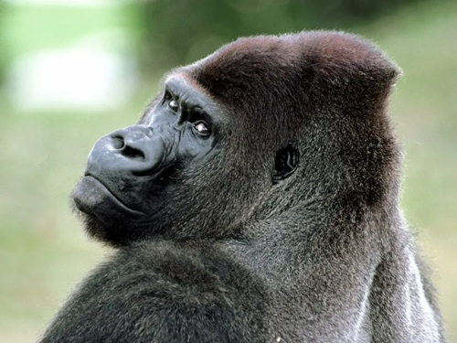

About Me
Who am I? I'm Luke Faulhaber a student at viu, my favorite colour is blood red, i love to play video games, go on bike rides, occasionally work out, and I love silly primates. Here are some of my skills ive learned.
My Skills
- I can read and write java, html, and python on a begginer level.
- I can deconstruct a computer and reconstruct it in a detailed, and thorough way with documentation and pictures
- I can endure, and persevere through many challenges both mental and physical making sure work gets done on time.
- I learn new concepts quickly as well as put them into practice soon after learning them.
Projects
three things I want to acomplish in my life with ITAS
- For the longest time ive wanted to run a D&D campaign with some friends one thats superhero inspired
- One of the many reason's I joined ITAS is because I want to work with Virus's and malicious programs to understand how the work and how to crack them so I will be able to notice them wherever I go
- I want to work on making games that aren't supported or purchasable, playable and eventually create servers for said games expecially masterpieces that never got their chance to shine.